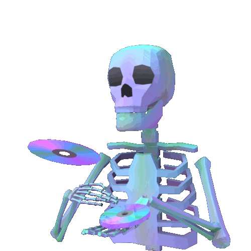

<<html>
<head>
<style>
body {
    background-image: url("https://68.media.tumblr.com/94a2485e6a9e5d886c11ded9ae2f2a98/tumblr_ot7qhobNeB1v23uw1o1_1280.jpg");
}
</style>
</head>
<body>
<html lang="en">
  <head>
    <meta charset="utf-8">
    <title>C r i b</title> 
  </head>
  <body>
    <font size="4"><a href="index.html">Crib</a></font>
    <font size="4"><a href="portfolio.1.html">Portfolio</a></font>
    <font size="4"><a href="about_me.html">All About Me!</a></font>
    <center><font size="10">w e l c o m e t o m y c r i b</font></center>      
  

    <center></center>


  <h1><center><font size="4">This is my crib where everything is understandable. Feel free to stick around.( ͡° ͜ʖ ͡°)  </font></center></h1>
    <p> <br> <br> <br> <br> </p>
    <center></center>
    <h1>feelin frisky?<br>ᕦ (◕ᴗ◕✿) ᕤ</><font size="2">WARNING:seizures</font></h1>
   
    <a target="images/flo2.gif" href="http://www.koehnline.com/newgifs/wos1.html">
  

     